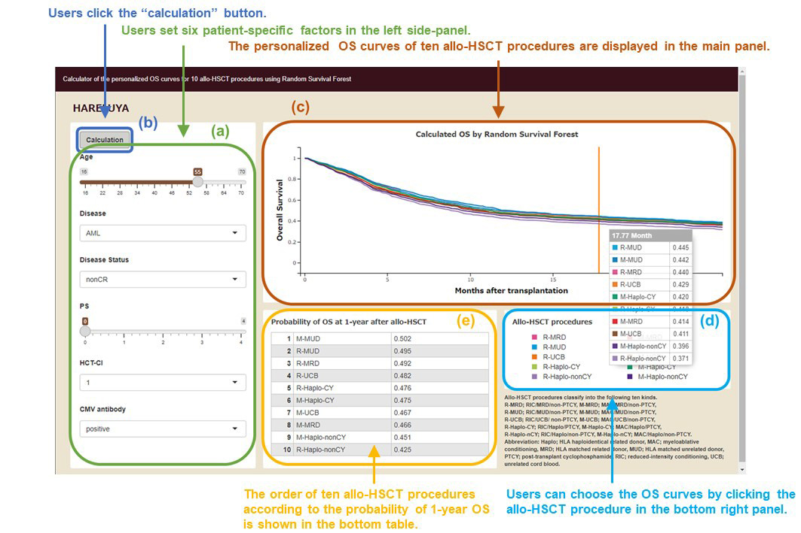
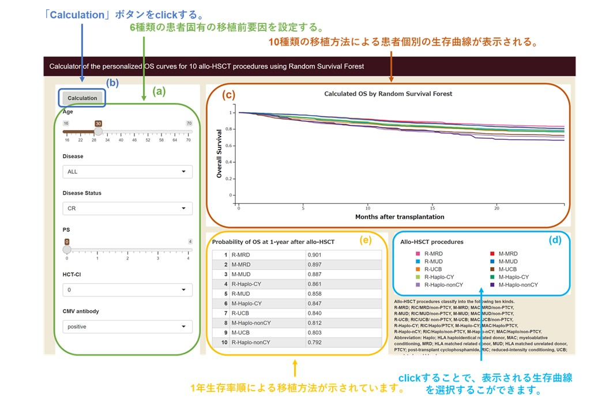

NOTICES AND DISCLAIMERS
ABOUT THIS APPLICATION
"HARELUYA" is a calculator of personalized overall survival (OS) curves for ten allogeneic hematopoietic stem cell transplantation (allo-HSCT) procedures using random survival forest (RSF). The training data were collected from 17,449 patients who underwent allo-HSCT in Japan between 2009 and 2018 through the Japan Society for Hematopoietic Cell Transplantation and the Japanese Data Center for Hematopoietic Cell Transplantation using the Transplant Registry Unified Management Program (TRUMP).
Do not make a clinical decision using this application because this is not medical equipment but for research. When you use this application, please take full responsibility for your decisions.
COPYRIGHT
All copyrights on this application and website and its contents are the property of *** unless otherwise noted. No portion of this application may be copied, used to prepare derivative works, or redistributed for commercial purposes without the prior written permission of ***.
DISCLAIMER
-
By using this application, you agree to be bound by the terms and conditions. If you do not agree with any of the terms, please do not use this application.
-
This application is not medical equipment.
-
This application is not a tool for prophylaxis, diagnosis, or treatment.
-
RSF, a machine learning algorithm, is well-known and widely used in academia
(https://CRAN.R-project.org/package=randomForestSRC)
-
Experience and knowledge of allo-HSCT are needed to correctly interpret the information generated by this application. It is not a substitute for professional medical care.
-
*** is not responsible for any damages related to your use of or inability to use this application, including without limitation, direct, indirect, special, compensatory, or consequential damages.
-
*** disclaim any warranties regarding this application. To the fullest extent permissible by law, *** makes no representations or warranties of any kind in connection with this application.
USAGE
-
Users set six patient-specific factors in the left side-panel (a).
-
Users click the “calculation” button (b). It takes from 30 seconds to 2 minutes to finish the calculation.
-
The OS curves for ten allo-HSCT procedures adjusted by the six factors set in (a) are displayed in the main panel (c).
-
Users can choose the OS curves by clicking the allo-HSCT procedure in the bottom right panel (d).
-
The order of ten allo-HSCT procedures according to the predictive probability of 1-year OS is shown in the bottom table (e).

【必ずお読みください】
本アプリケーションの概要
本アプリケーション（HARELUYA）は、Random Survival Forestという機械学習モデルを用いて、患者個別の条件に応じた10種類の移植方法における同種造血細胞移植後生存曲線の計算機です。教師データは、Transplant Registry Unified Management Program（TRUMP）を通じて、2009年から2018年の間に本邦で同種造血細胞移植が行われた17,449名の患者様のデータから集められました。
本アプリケーションは研究目的に開発されたものであり、医療機器ではありません。従って、本アプリケーションによる臨床的判断は行わないでください。また、本アプリケーションのご使用についてはご自身の責任のもとで行ってください。
著作権
本Webサイトおよびそのコンテンツのすべての著作権は、***の所有物です。コピー、派生著作物の作成、商業目的による第三者再配布は許可しません。また、雑誌、著書、HPへのURL掲載に関しては、***による書面上の許可が必要です。
免責事項
-
本アプリケーションを使用したことにより、あなたは下記の規約に同意したことになります。
いずれかの条件に同意されない場合は、本ツールを使用しないでください。
-
本アプリケーションは、医療機器ではありません。
-
本アプリケーションは、予防、治療、診療目的のものでもありません。
-
本アプリケーションで使用しているRandom Survival Forestというアルゴリズムは、広く学術利用されている公知の手法です。
(https://CRAN.R-project.org/package=randomForestSRC)
-
本アプリケーションの情報は医療者から受ける説明の代替にはなり得ません。
- ***は、本アプリケーションの利活用または本アプリケーションより派生する全ての事象に対する一切の説明・保証義務と法的責任を負いません。
-
***は、本アプリケーションの中断、エラー等の不具合に対する一切の保守義務を負いません。
本アプリケーションの利用方法
-
左パネル(a)において、6種類の患者固有の移植前要因を設定してください。
-
(b)の「Calculation」ボタンをclickしてください。計算には、30秒から2分ほどかかります。
-
(c)に左パネル(a)で設定した患者条件における、10種類の移植方法による生存曲線が表示されます。
-
右下パネルのallo-HSCT procedure(d)をclickすることで、表示される生存曲線を選択することができます。
-
下部中央パネルの表(e)には、1年生存率順による移植方法が示されています。
